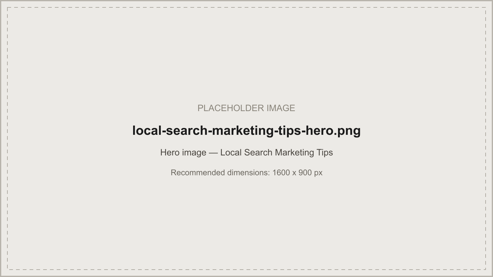
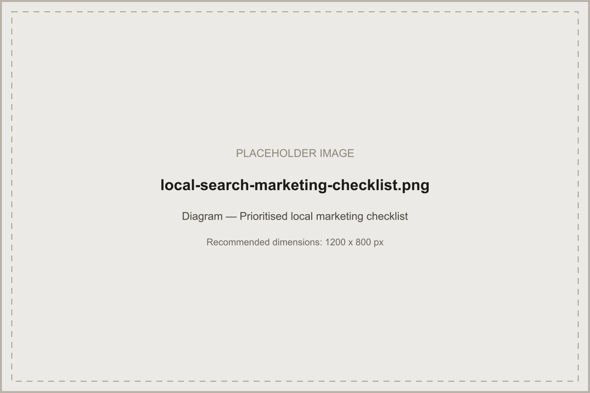

Organised by impact and effort, not a generic numbered list — why each tip matters, what it costs to implement, and how to measure it.

In short: the highest-impact local search marketing tips are fully completing Google Business Profile, fixing citation inconsistencies, and setting up an automated review-request system — all low-to-moderate effort with outsized impact. Content depth, local link building, and CRM-driven follow-up matter too, but pay off over a longer horizon. Below, each recommendation is organised by implementation stage with why it matters, effort, tools, and how to measure it.
Why it matters: Incomplete profiles rank behind fully completed ones, all else equal. Expected impact: High. Effort: Low, typically under an hour. How to do it: Fill every attribute, service, and product field; confirm hours are accurate. Recommended tool: Google Business Profile Manager directly. How to measure: Profile completeness score in GBP Manager; track Insights views and actions before and after. Automation opportunity: Low — this is largely a one-time manual task. UK/AU note: None specific; applies identically in both markets.
Why it matters: Inconsistent NAP data actively undermines the trust signal citations are meant to build. Expected impact: Medium-high. Effort: Low-medium. How to do it: Check the major data aggregators and top five directories first; correct the worst mismatches. Recommended tool: A citation-tracking tool, or manual spot-checks for smaller businesses. How to measure: Citation accuracy percentage across checked directories. Automation opportunity: Medium — monitoring can be automated; corrections often still need manual submission. UK note: Check UK-specific and industry directories relevant to your market, not just global ones.
Why it matters: Review velocity and recency both factor into local ranking, and a steady flow looks more natural than sporadic bursts. Expected impact: High, compounding over months. Effort: Medium to set up, low to maintain. How to do it: Trigger a request automatically after every completed job or appointment. Recommended tool: A CRM or dedicated review-management platform. How to measure: New reviews per month, response rate, rating trend. Automation opportunity: High — this is one of the most automatable tasks in local search marketing. UK/AU note: Never selectively ask only happy customers — review gating breaches Google's guidelines in both markets.
Why it matters: Thin, templated location pages read as low-value to both Google and real visitors. Expected impact: Medium-high. Effort: Medium-high, depending on page count. How to do it: Identify pages that are just an address and phone number; rewrite with genuine local content per the framework in our local SEO strategy guide. Recommended tool: None specific — this is content work. How to measure: Organic visibility and engagement for the rewritten pages, before and after. Automation opportunity: Low — genuine local relevance is hard to fake with automation alone. UK note: Use British English and locally accurate references throughout.
Why it matters: An actively updated profile earns more visibility than a static one. Expected impact: Medium. Effort: Low, ongoing. How to do it: Post weekly — offers, updates, or recent work. Recommended tool: GBP Manager, or a scheduling tool that supports GBP posts. How to measure: GBP Insights views and engagement trend. Automation opportunity: High — posting can be scheduled in advance. UK/AU note: None specific.
Why it matters: Citation drift happens gradually and compounds if left unchecked. Expected impact: Medium. Effort: Low if monitored continuously. How to do it: Re-run the citation check quarterly rather than treating the first fix as permanent. Recommended tool: Citation-tracking software. How to measure: Citation accuracy percentage over time. Automation opportunity: High for monitoring, medium for correction. UK/AU note: Re-check market-specific directories, which can change independently of global ones.
Why it matters: Local backlinks carry outsized relevance weight and are hard for less locally-embedded competitors to replicate. Expected impact: High, but slower to materialise. Effort: High, ongoing. How to do it: Sponsor local events, pursue local press coverage, build genuine partnerships. Recommended tool: None specific — this is relationship-driven work. How to measure: New referring local domains, coverage secured. Automation opportunity: Low — outreach and relationship-building resist automation. UK note: Target credible UK publications and organisations specifically, not generic global directories.
Why it matters: A lead that isn't followed up quickly is often lost to a faster-responding competitor. Expected impact: High for conversion, not visibility. Effort: Medium-high to set up. How to do it: Connect call tracking and form submissions to a CRM with an automated acknowledgment and a fast human follow-up window. Recommended tool: A CRM with call-tracking integration. How to measure: Average response time, enquiry-to-booking conversion rate. Automation opportunity: High for acknowledgment and routing; human judgement still needed for the actual follow-up conversation.

For most businesses, fully completing and actively maintaining Google Business Profile — accurate category, complete attributes, regular photos and posts — delivers the clearest return relative to the effort required, since it's often the single highest-leverage asset for local visibility.
Immediate wins are one-time fixes. Most other tasks — reviews, citation monitoring, content, reporting — belong on a monthly cadence, since local search is an ongoing discipline rather than a project with a single finish line.
Citation sources and directory relevance can differ by UK region and industry, so treat each recommendation as a starting point to adapt to your specific market rather than a one-size-fits-all checklist.
Get a free audit and see exactly which of these tips will move the needle fastest for you.
Request a Free Local SEO Audit →Written and reviewed by the Acendia International Editorial Team, part of Acendia International, an SEO agency working with businesses across the United Kingdom. See our editorial approach for how we research, write, and review our guides. Published 4 August 2026. Last updated 4 August 2026.
Book a free strategy call and we'll prioritise these for your specific business.